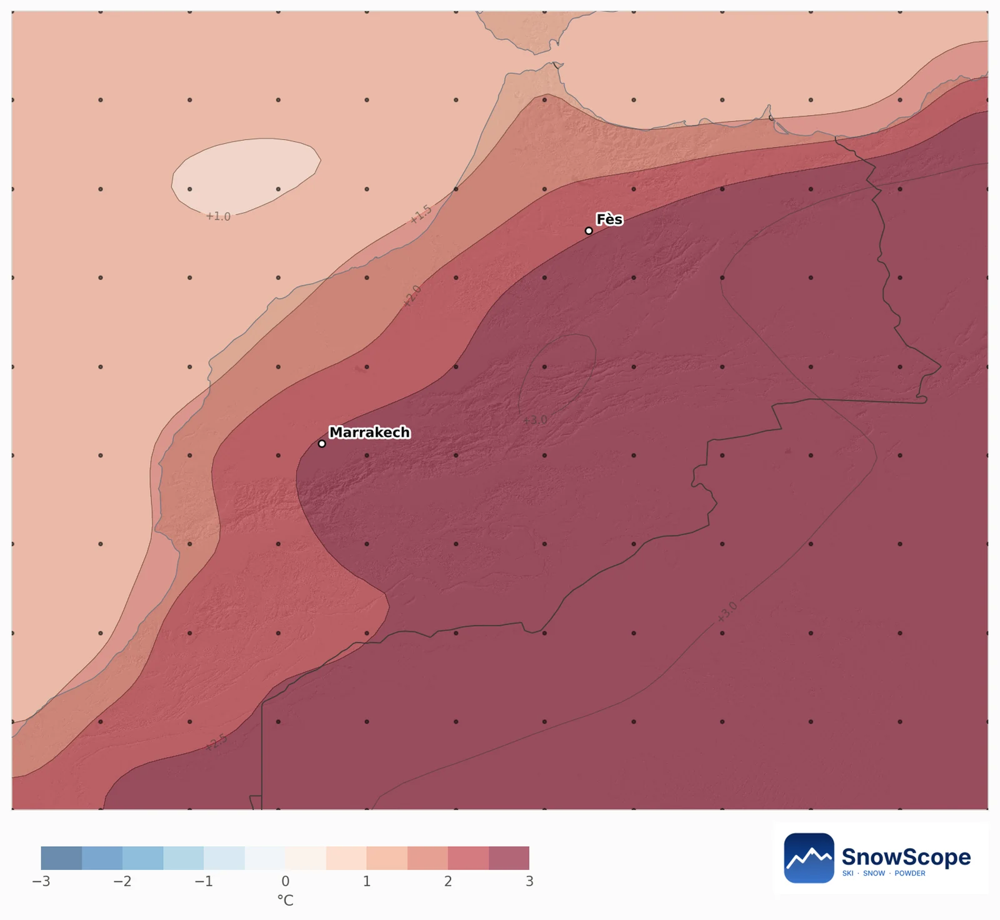
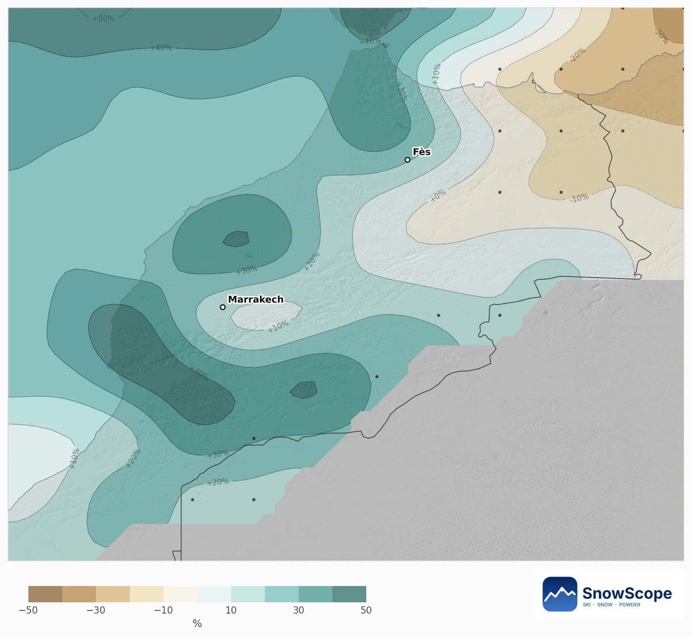
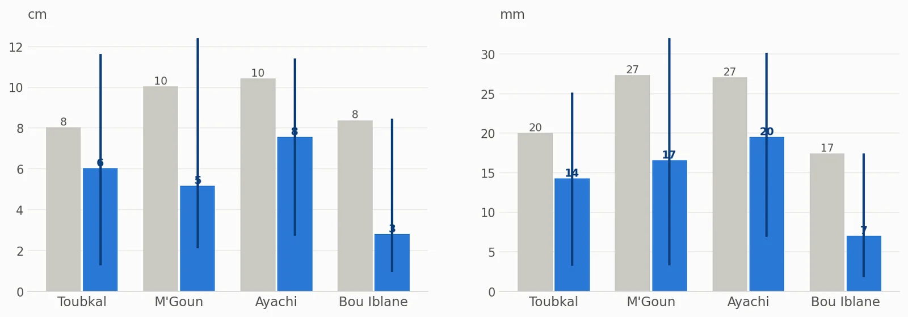
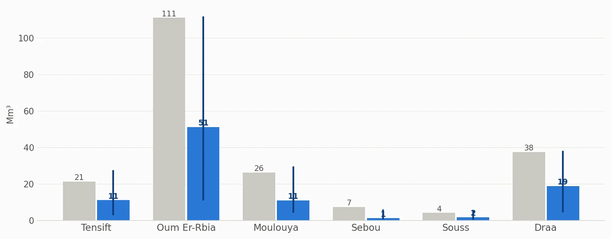
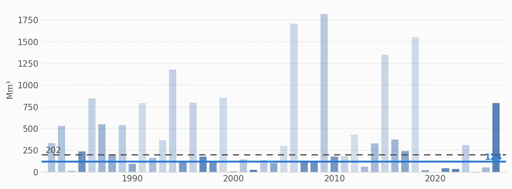
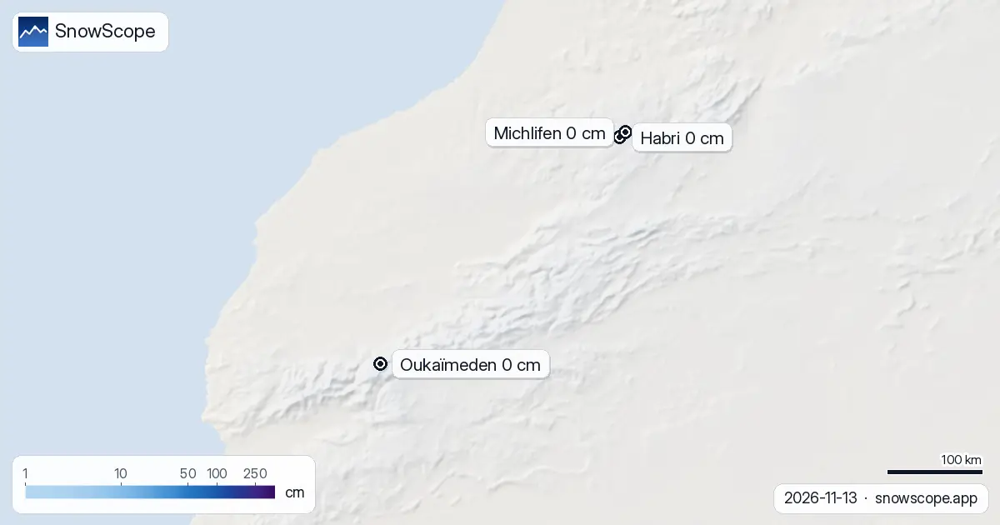

Atlas snow water in February 2027: more rain, much warmer, less snow stored
Snow in the Atlas is a water store for Morocco's rivers, and for February 2027 that store looks small. The European seasonal forecast is 2.4 to 2.9 °C warmer than usual over the mountains and wetter in the west and south, but in this warmth more of it falls as rain. Our outlook: about 124 million m³ of water in the snow, against a usual 202.
See the live snow forecast for Atlas in the SnowScope appSnow depth, powder alerts and the 3D map, free.
Every snowy area leans leaner
We compare each Atlas mountain area of about 10 km with its own past Februaries, and the map keeps only the areas that usually see snow in February. None of them leans snowier. The chance of a deeper snow cover than in a usual February ranges from 23 % to 37 %, and the middle value is 27 %.
Warm and wet: why rain wins
Over the mountain parts of the river basins, the 51 forecast runs put February 2.4 to 2.9 °C above usual, and between 92 and 98 % of them agree it will be warmer. The extra precipitation is mostly in the west and south: 26 % above usual over the Souss, 19 % over the Tensift, 16 % over the Draa and 10 % over the Oum Er-Rbia. The Moulouya (3 %) and the Sebou (4 %) stay near usual.
When warm air and wet air arrive together, the snow line goes up. Storms then drop rain on the middle slopes and snow only near the summits. The highest ground, the western High Atlas around Toubkal, therefore keeps the best odds.


The high massifs: depth and water
On the high ground of the four big massifs, a usual February brings an average snow depth of 8 cm on Toubkal, 10 cm on M'Goun and around Ayachi, and 8 cm on Bou Iblane. These are averages over all slopes; north faces hold far more. Our outlook gives 6, 5, 8 and 3 cm. Toubkal has the best chance of a snowier month than usual (37 %), Bou Iblane the lowest (27 %).
For water we use the snow water equivalent: the depth of water you would get if the snow melted (1 mm = 1 litre per square metre). Usual values are 20 mm on Toubkal, 27 mm on M'Goun and Ayachi, and 17 mm on Bou Iblane; the outlook is 14, 17, 20 and 7 mm. The snow-covered share of the high ground falls from 66 % to 42 % on M'Goun and from 49 % to 28 % on Bou Iblane.

What it means for rivers and reservoirs
Across all of Morocco's mountains, the snow in a usual February holds 202 million m³ of water. Our outlook is 124 million m³. The range is wide, most likely 28 to 217, and the chance of more than usual is 27 %.
The Oum Er-Rbia basin stores the most again: 111 million m³ in a usual February, 51 in the outlook. Next come the Draa (38, outlook 19), the Moulouya (26, outlook 11), the Tensift (21, outlook 11) and the Sebou (7, outlook 1). Some of the extra rain will run straight into the rivers instead of waiting in the snow, so this spring the flows will depend more on single storms than on the snowpack.


How much to trust it
In the record, the Februaries most like this forecast are 2024, 2022 and 2002. A forecast three months ahead is less reliable than one a month ahead, so take this as a shift in the odds, not a promise. The December and January updates will be firmer.
Tips for skiers
- In a warm, wet February, ski high: the snow line may sit well above the resort base.
- After a storm, snow lasts longest on the Toubkal massif and on the north faces of M'Goun.
- Before you drive to the mountains, check the SnowScope map and the 7-day forecast.
References and credits
- ECMWF SEAS5 seasonal forecasts, Copernicus Climate Change Service (C3S) cds.climate.copernicus.eu/datasets/seasonal-postprocessed-single-levels
- ERA5 monthly averaged data, Copernicus Climate Change Service (C3S) cds.climate.copernicus.eu/datasets/reanalysis-era5-single-levels-monthly-means
About these numbers
Method. Temperature and precipitation: the seasonal forecast of the European weather centre (ECMWF SEAS5, 51 runs started 1 November 2026, anomalies against its own 1993-2016 reforecasts, about 100 km grid). For every winter from 1982 to 2026 we compare the weather of that month (ERA5) with each forecast run; the winters that look most alike count more, and their snow gives the odds. Snow depth and snow water equivalent (SWE, the water you get by melting the snow: 1 mm = 1 litre per square metre) come from the Snow_Hydro 1 km Morocco snow model (degree-day, evolving density, ERA5-Land downscaled), winters 1982 to 2026; snow water volume = SWE x area.
Cite this report
For research, teaching or the press: the numbers and charts are free to reuse under CC BY 4.0 with this citation.
SnowScope (2026), Atlas snow water in February 2027: more rain, much warmer, less snow stored, https://snowscope.app/blog/en/2026/11/atlas-february-2027-snow-outlook.html, accessed 2026-11-10
SnowScope (Atlas Labs). (2026, November 10). Atlas snow water in February 2027: more rain, much warmer, less snow stored. SnowScope snow reports. https://snowscope.app/blog/en/2026/11/atlas-february-2027-snow-outlook.html
BibTeX
@misc{snowscope2026atlasfebruary2027snowout,
author = {{SnowScope (Atlas Labs)}},
title = {Atlas snow water in February 2027: more rain, much warmer, less snow stored},
year = {2026},
month = nov,
howpublished = {\url{https://snowscope.app/blog/en/2026/11/atlas-february-2027-snow-outlook.html}},
note = {Published 2026-11-10 11:00 UTC; accessed 2026-11-10}
}· CC BY 4.0 · Methods, data and tools →
Follow Atlas
Free: a message when fresh snow is coming, and the forecast every morning.
More snow reports

Snow in the Atlas is fleeting at this time of year, so every day's picture matters. The Atlas ski resorts hold no snow on their slopes today. Snow is …

The ski resorts of the Atlas have no snow on their slopes today. Our snow model only finds snow on the highest summits: about 80 km² of snow-covered …

A practical notebook on Oukaïmeden in the High Atlas: when snow usually comes, how much, which slopes to aim for and how to get there from Marrakesh.